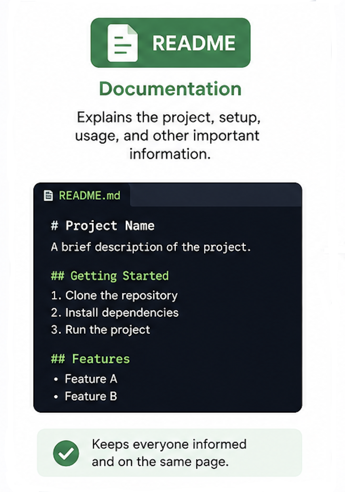
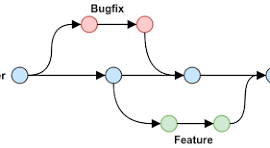

What is a README file?
A README is the front door of any software project — the first
document a visitor reads when they encounter your code.
Typically named README.md and written in Markdown, it lives at the
root of a repository and renders automatically on platforms like
GitHub. Its core purpose is to answer three questions immediately:
what does this project do, how do I get it running, and how do I use
it?
A well-crafted README...
Read more
What is a WIREFRAME?
A wireframe is a skeletal blueprint of a digital interface — a
low-fidelity sketch that maps out layout and structure before any
visual design begins.
Think of it as the floor plan of a building: it shows where the rooms
are, how they connect, and how large each space is — but says nothing
about paint colours or furniture. In UI/UX design, wireframes...
Read more

What is a BRANCH in Git?
A branch in Git is an independent line of development — a lightweight
pointer that lets you work on changes in isolation without affecting
the main codebase.
Imagine a river that splits into a side channel. Work can proceed
along the side channel independently; later, the two streams can be
merged back together. In Git, this is exactly what a branch does: it
diverges from a point in the commit history so
Read more